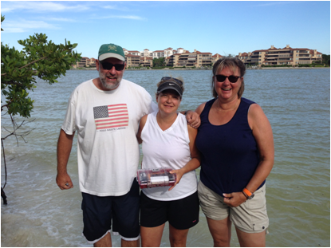
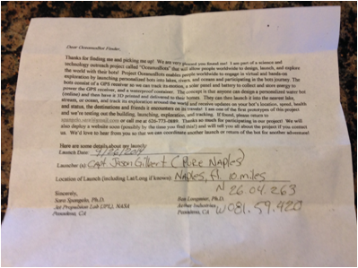

Stories from bots and bot owners as the bots travel the world.
The Second Launch! Naples, FL
|  |  |
The Second Launch(es) from Florida! The Ocean Bot “SierraBot-3” was received in the mail by the Project OceanusBots team to our launcher, Terry Longmier, in the Naples/Marco Island area to my condo. The bot was charged and repaired a bit from the travel and then dropped off with the manager of a boat company at the docks at Naples bay. He handed it off to one of his boat captains who took it about 10 miles out into the gulf waters on September 26. Much thanks to the manager and his boat captain for their help! From there the Bot traveled on its own about 25-30 miles out and then turned around and came back to nearly the same point it was dropped off on October 3rd (see track below). From there it traveled south to Big Marco Pass at high tide and thus was pushed into the pass on October 4th around 8pm and stopped reporting at midnight having been beached. It turns out that it had reached the "Hideaway Beach", a gated community on the most northern shores of Marco Island, so Terry had some explaining to do to get in early that Sunday morning and search the mangrove lined beach. After getting in he located a particular palm tree and had a good idea that it should be within 100' east of that tree, if it had not moved since midnight when it last reported. He waded out into the waters to get around the mangrove trees that had grown up to the water edge. After searching for a half hour he saw 3 people walking toward me strolling the beach. I greeted them and asked if they may have seen the Bot on their stroll. They immediately were interested in helping me search. They were Judy Touhy of Chicago and Susie & Harry Geier of Frankfurt, Germany. Susie, who’s good at searching for sea shells and who’s expertise came in handy, found the Bot hiding in the tangled roots of the mangroves along the shore. She said she was good at searching for sea shells so her expertise was very helpful. Much thanks to Judy, Susie, and Harry for their time and help!